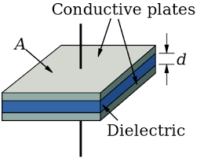

A capacitor is a device that stores electrical energy by separating positive and negative charges on two conducting plates. Capacitance is the measure of a capacitor's ability to store charge per unit voltage.
What is a Capacitor?
Definition
A capacitor consists of two conducting plates separated by an insulating material (dielectric) or vacuum/air. When a voltage is applied, equal and opposite charges accumulate on the plates, creating an electric field between them.
Capacitors are fundamental components in electrical circuits, used for energy storage, filtering, timing, and many other applications. The ability of a capacitor to store charge depends on its geometry and the material between the plates.

Basic capacitor structure with two conducting plates separated by a dielectric.
Capacitance Definition
Fundamental Formula
Capacitance is defined as the ratio of charge stored to the voltage applied:
$$C = \frac{Q}{V}$$
Where:
C: Capacitance (Farads, F)
Q: Charge stored on one plate (Coulombs, C)
V: Voltage across the capacitor (Volts, V)
This relationship shows that:
Higher capacitance means more charge stored for the same voltage
Capacitance is constant for a given capacitor (independent of voltage)
Units: 1 Farad = 1 Coulomb/Volt
Practical values: Capacitors range from picofarads (pF) to farads (F)
Parallel Plate Capacitor
Parallel Plate Capacitance
For a parallel plate capacitor with area A and separation d: